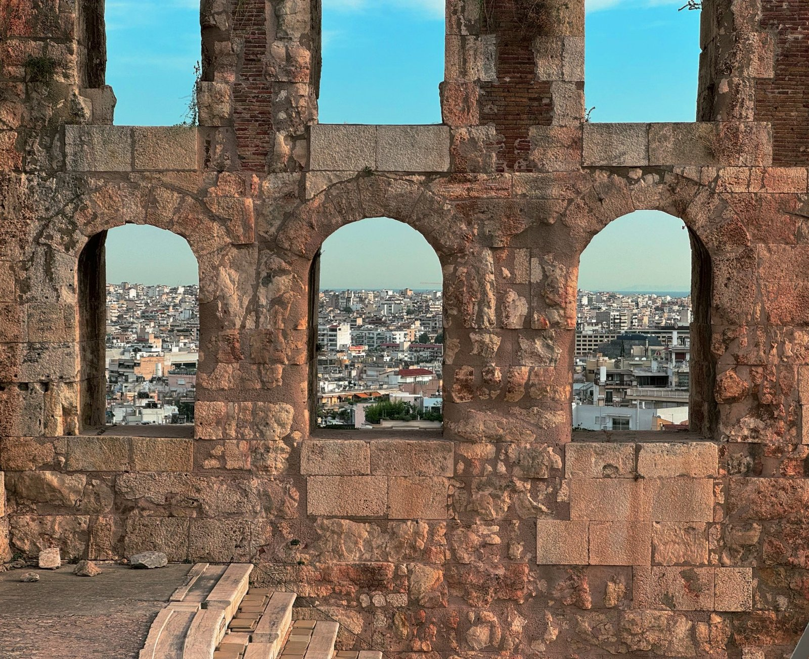
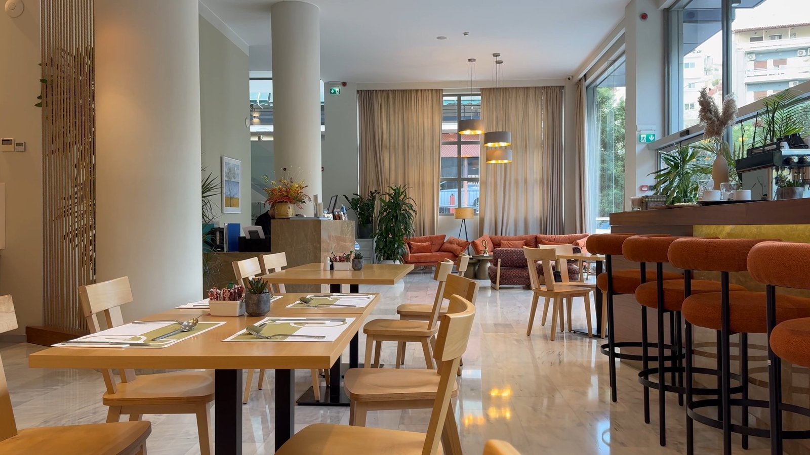
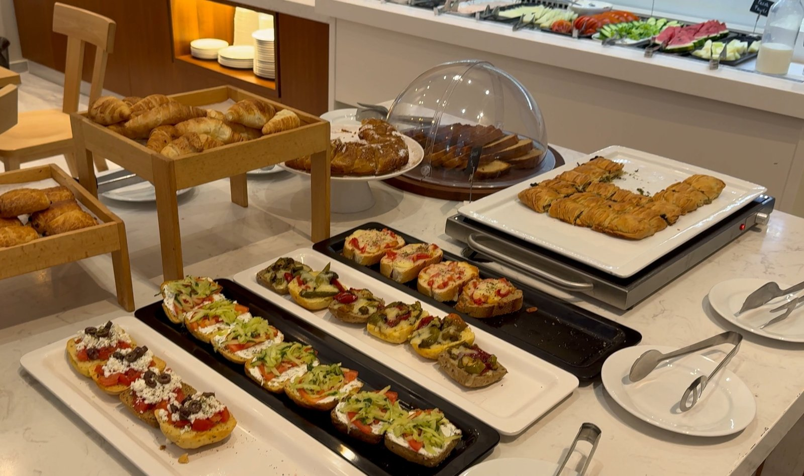
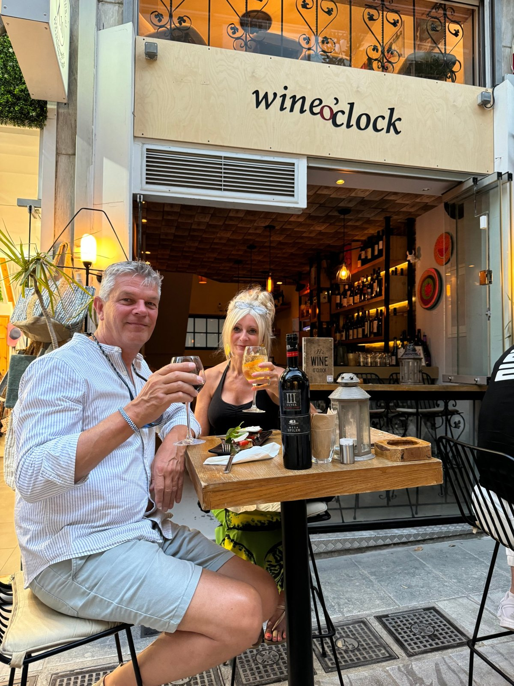
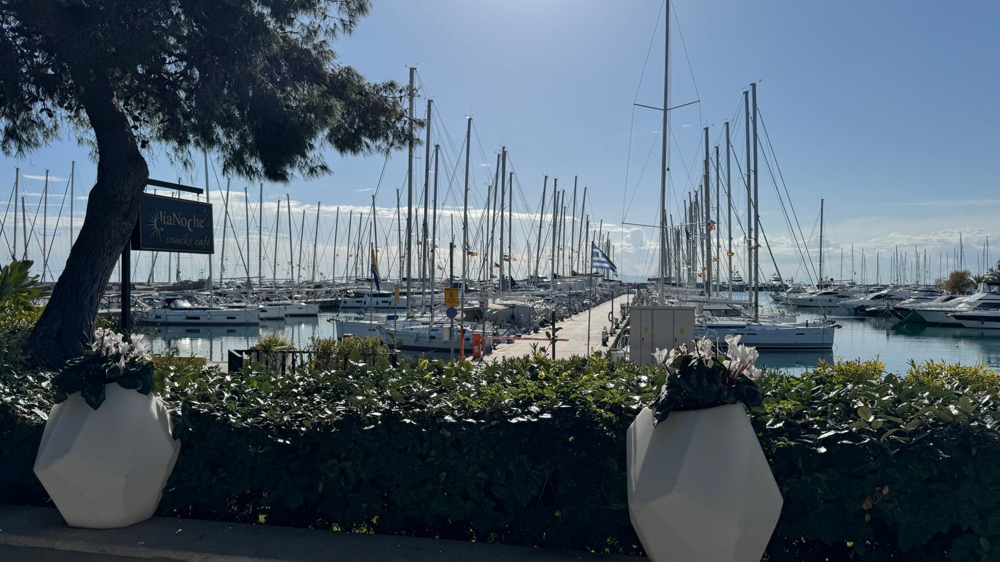
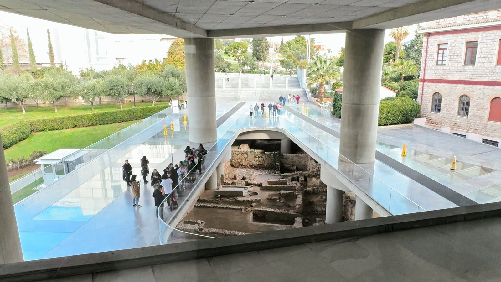
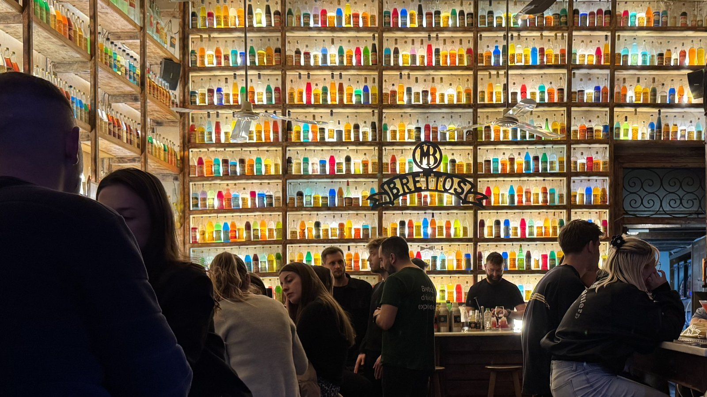
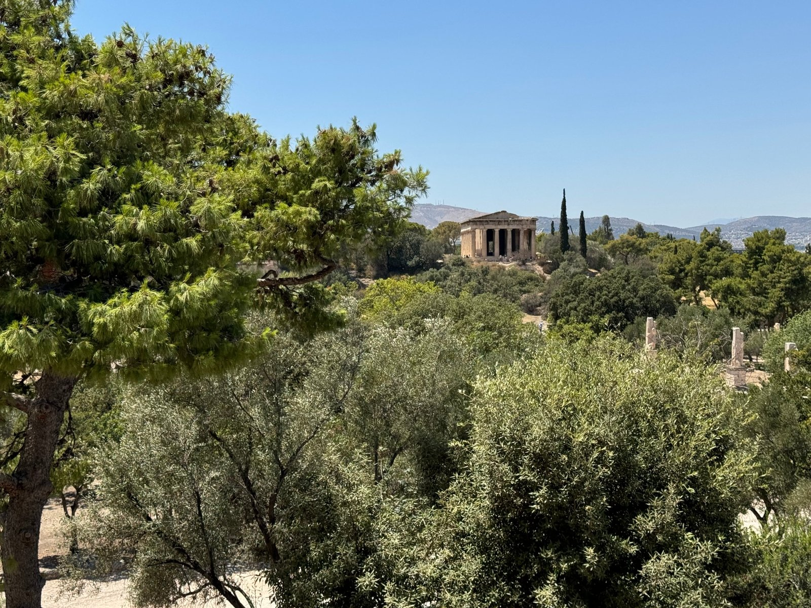
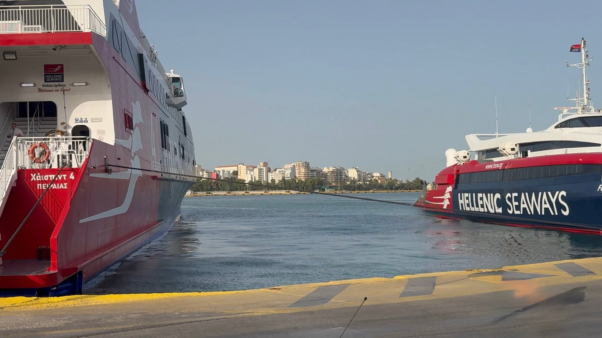

Athens is one of our favourite Greek cities, and having visited several times now, we still haven't tired of it. There's something about this place that keeps drawing us back. Perhaps it's the extraordinary history, the endless choice of rooftop bars, the food, or simply the fact that you can spend the morning wandering around ancient ruins and the afternoon drinking wine while gazing at the Parthenon.
It's a tough life, but somebody has to do it!
We've stayed in the same hotel more than once, discovered new corners of the city on every visit and even escaped to the coast when the temperatures became a little too enthusiastic. Athens is far more than a city break destination. It's a brilliant base for exploring some of mainland Greece, and if you have a few extra days, there are islands within easy reach too.
WHAT IS ATHENS REALLY LIKE?
Athens is a fascinating mixture of old and new. Ancient temples and archaeological remains sit alongside busy shopping streets, modern apartment blocks, traditional tavernas and trendy cocktail bars. Look in almost any direction and there's a good chance you'll spot something thousands of years old.
The Acropolis dominates the skyline, and the Parthenon seems to appear around every corner, particularly from the many rooftop bars dotted around the city. At street level, Athens can be noisy, bustling and occasionally chaotic, but that's all part of its character.

One of our favourite areas is Plaka, the city's oldest historic neighbourhood, tucked beneath the Acropolis. It feels almost like stepping into a Greek island village, with narrow cobbled streets, colourful bougainvillea, little independent shops and traditional tavernas spilling out onto the pavements.
Nearby, the tiny neighbourhood of Anafiotika is particularly pretty. Its whitewashed houses, stone alleyways and splashes of colour wouldn't look out of place in the Cyclades. It's hard to believe you're in the middle of a busy European capital.
Other neighbourhoods worth exploring include Monastiraki, with its lively flea market and rooftop cafés, and Psiri, which has a more alternative feel, with street art, independent bars and plenty of nightlife.
OUR ATHENS EXPERIENCES – A HOTEL WITH A VIEW AND ALWAYS TIME FOR WINE
B4B Athens Signature Hotel
We've stayed at our favourite hotel, B4B Athens Signature Hotel, on several occasions. Its central location makes it an excellent base for exploring, and most of the main attractions are within comfortable walking distance.

The hotel has friendly staff, a lovely rooftop bar with views towards the Parthenon and, importantly, a fabulous buffet breakfast. There's nothing quite like starting the day with a decent breakfast before heading out to explore. For a hotel in such a central location, we've also found it to be great value for money.

Wine O'Clock
And then there's this photograph of Jacquie and me enjoying a drink at a bar called Wine O'Clock. Well, when in Greece, it would be rude not to. In fact, I'm not entirely convinced that Greece operates on conventional time at all. There's breakfast time, lunch time, sunset time and, of course, Wine O'Clock.

We seem to manage all four quite successfully.
But we weren't content with spending the entire holiday sitting in lovely bars, eating Greek food and drinking our way around the city. Well, not entirely.
Up Mount Lycabettus
One of our more ambitious outings was a trip up Mount Lycabettus, standing 277 metres above sea level in the Kolonaki neighbourhood. It offers some of the best panoramic views across Athens, with the tiny white Chapel of St George perched at the summit, alongside a restaurant and open-air theatre.
You can walk up the winding paths through the pine trees or take the funicular railway. Given that temperatures were exceeding 40°C, we decided that walking up a sun-baked hillside was probably not going to be the highlight of our holiday. We opted for the funicular instead.
The return ticket cost us €13 each. Tickets are purchased at the kiosk, in cash, rather than booked in advance. The journey takes around three minutes, travelling through a dark tunnel inside the hillside. It's not the most scenic railway journey you'll ever experience, but it certainly beats sweating your way up the mountain.
Once at the top, a cold beer and a sangria soon restored our enthusiasm. The views were spectacular, stretching across the city towards the sea, and on a clear day you can really appreciate just how enormous Athens is.
Escaping the heat – the Athens Riviera
After a few days exploring the city, we decided we needed a break from the heat and the endless pavements. Our solution was to head for the Athens Riviera.
The Riviera is a stretch of coastline running south from the Athens metropolitan area towards Cape Sounion, with sandy beaches, marinas, beach clubs, seafood restaurants and lovely little coastal spots.

We caught a tram from Syntagma Square and headed towards the coast. The journey took around 45 minutes, and the ticket cost us less than €1.40 each.
What a lovely surprise it was to find a sandy beach after the hustle and bustle of the city. It was a completely different atmosphere, with the sea breeze taking the edge off the heat and a much slower pace of life.
We found ourselves a spot, grabbed a beer and enjoyed doing absolutely nothing for a change.
Sometimes the best sightseeing involves not sightseeing at all.
The Athens Riviera is well worth considering if you're visiting in summer. You don't necessarily need to hire a car or organise an expensive excursion to enjoy a little seaside escape.
THE BEST THINGS TO SEE AND DO IN ATHENS
You could spend days exploring Athens without running out of things to see. Even if you're not particularly interested in ancient history, some of these sights are simply too impressive to miss.
The Acropolis and Parthenon
The big one. Sitting high above the city, the Acropolis is home to the magnificent Parthenon, the Erechtheion and the Temple of Athena Nike. It's one of Greece's most important archaeological sites and well worth the climb. Visit early in the morning or later in the afternoon, particularly during summer, as there's very little shade.
The Acropolis Museum

Located beneath the Acropolis, this modern museum houses an incredible collection of ancient sculptures and archaeological finds. Its glass floors even allow you to see excavations beneath the building.
Plaka and Anafiotika
Allow yourself plenty of time to wander these charming neighbourhoods. Stop for a coffee on the famous Mnisikleous Street staircase, browse the little shops or visit Brettos, Athens' oldest distillery, with its wonderfully colourful illuminated wall of liquor bottles. It's worth popping in for a look, even if you don't fancy sampling the ouzo.

Monastiraki Flea Market
A lively area full of market stalls, souvenir shops, leather goods, antiques and rooftop cafés. It's a great place to pick up something unusual, although you'll need to keep an eye on your wallet because it's very easy to find things you didn't know you needed.
Ancient Agora and Temple of Hephaestus

This was once the centre of everyday life in ancient Athens, where people gathered to trade, discuss politics and socialise. The remarkably well-preserved Temple of Hephaestus is one of the highlights.
Panathenaic Stadium
A magnificent all-marble stadium and the venue for the first modern Olympic Games in 1896. It's quite something to stand inside and imagine the crowds that once filled it.
Syntagma Square
The city's main square is home to the Greek Parliament and the Tomb of the Unknown Soldier. Try to catch the Changing of the Guard ceremony, which takes place every hour. The guards, known as Evzones, wear their distinctive traditional uniforms, complete with pom-pom shoes. It's quite a spectacle.
DAY TRIPS FROM ATHENS – ANCIENT WONDERS AND SPECTACULAR SCENERY
One of the advantages of staying in Athens is its location. There are some fantastic places within a couple of hours' drive, making it an excellent base for exploring more of mainland Greece. Read our car hire tips before you book.
Delphi
approximately 180 km, 2½–3 hours each way
Once considered the centre of the ancient world, Delphi is spectacularly positioned on the slopes of Mount Parnassus. It was home to the famous Oracle of Delphi, where ancient Greeks travelled to seek advice and predictions about their future. The archaeological site includes the Temple of Apollo, the ancient theatre and the stadium. The surrounding mountain scenery is just as impressive as the ruins themselves. Allow a full day for this trip.
Mycenae
approximately 140 km, 1½–2 hours each way
If you're interested in Greek mythology, Mycenae is a fascinating place to visit. This ancient fortified city was the centre of the Mycenaean civilisation and is traditionally associated with King Agamemnon, the legendary leader of the Greeks during the Trojan War.
The enormous Lion Gate, the ancient citadel and the impressive Treasury of Atreus (also known as the Tomb of Agamemnon) are the main attractions. The enormous stone blocks used to construct the walls are quite extraordinary. The site is a UNESCO World Heritage Site and can easily be combined with a visit to Nafplio.
Ancient Nemea
approximately 120 km, 1½ hours each way
Another interesting stop in the Peloponnese is Ancient Nemea, particularly if you enjoy a bit of history alongside your Greek wine.
The Sanctuary of Zeus was the home of the ancient Nemean Games, one of the four major athletic festivals of the ancient Greek world. The Temple of Zeus is the main attraction, with several reconstructed columns giving you an idea of its original grandeur.
Nearby is the ancient stadium, which is particularly interesting because you can still walk through the underground vaulted entrance used by athletes arriving for the games. There's also an archaeological museum.
Nemea is surrounded by vineyards and is now one of Greece's important wine-producing regions, so you could easily combine a little ancient history with a wine-tasting stop. Now that's what I call a cultural excursion!
Temple of Poseidon, Cape Sounion
approximately 70 km, 1–1½ hours each way
This is one of the most spectacularly positioned ancient temples in Greece. Perched on a rocky headland overlooking the Aegean Sea, the Temple of Poseidon dates back to the fifth century BC.
Dedicated to the Greek god of the sea, it was an important landmark for sailors approaching Athens. Today, it's particularly famous for its sunsets, when the ancient marble columns are bathed in golden light.
If you only have time for one half-day excursion from Athens, this would be high on my list. Take a camera, enjoy the scenery and, if possible, time your visit for sunset.
Ancient Corinth and the Corinth Canal
approximately 80–90 km, 1–1½ hours each way
Ancient Corinth was once one of the most important cities in Greece, strategically positioned between mainland Greece and the Peloponnese. Today you can explore its archaeological remains, including the Temple of Apollo, the ancient marketplace and the Roman ruins.
Just a short drive away is the Corinth Canal, an extraordinary engineering achievement. Completed in 1893, this 6.4 km waterway cuts through the narrow Isthmus of Corinth, connecting the Gulf of Corinth with the Saronic Gulf.
When we visited, people were actually bungee jumping from the bridge over the canal. Now, I'm all for trying new experiences, but there are limits. No amount of rum or beer would get either Jacquie or me jumping off that bridge. We were quite happy keeping our feet firmly on the ground, thank you very much!
ISLAND HOPPING FROM ATHENS – FOUR ISLANDS WITHIN EASY REACH
If you've got a little more time in Athens, why not escape to one of the nearby islands? Ferries depart from Piraeus, Athens' main port, which is easily reached by metro from the city centre. Our island hopping guide explains how the ferries work.

The Saronic Islands offer a wonderful change of pace, with traditional harbours, pretty waterfront villages, swimming spots and plenty of lovely tavernas. Here are four worth considering.
Hydra – the car-free island
Ferry: approximately 1½–2 hours · From €28.50 each way
Hydra is arguably the prettiest of the four, with a beautiful harbour surrounded by elegant stone mansions, waterfront cafés and traditional tavernas. There are no ordinary cars on the island, so donkeys, water taxis and walking are the main ways of getting around. It's perfect for wandering, swimming and enjoying a long lunch overlooking the harbour.
Spetses – elegant and traditional
Ferry: approximately 2–3 hours · From €38.50 each way
Spetses has a lovely old-world atmosphere, with neoclassical buildings, a picturesque harbour, pine-covered hills and lovely beaches. Horse-drawn carriages are part of its charm, and although private cars are restricted, you can explore by bicycle, taxi or on foot. A great choice if you fancy a little Greek island sophistication.
Aegina – the easiest island escape
Ferry: approximately 40 minutes–1 hour 25 minutes · From €10.50 each way
Aegina is one of the easiest islands to visit from Athens. It's famous for its pistachios, pretty harbour, seafood tavernas and relaxed atmosphere. You can also visit the impressive Temple of Aphaia, one of the best-preserved ancient temples in Greece. Ideal for a day trip without spending too much time travelling.
Poros – a relaxed waterfront escape
Ferry: approximately 1 hour 15 minutes by high-speed ferry · From €24.50 each way
Poros is a charming little island with a picturesque harbour, colourful waterfront buildings and a lovely clock tower overlooking the town. There are sandy beaches, pine forests and plenty of waterfront restaurants. It's a particularly easy island to explore on foot and makes a lovely change from the busy capital. Read our Poros blog for more.
Ferry prices are indicative 2026 adult, one-way fares from Piraeus. They vary by operator, vessel and season. Conventional ferries can take longer, and high-speed services are generally more expensive. Always check return sailings before planning a day trip. You can book through Ferryhopper or directly with operators such as Hellenic Seaways.
PRACTICAL TIPS FOR VISITING ATHENS
- Getting around: Athens is surprisingly easy to explore on foot. The metro is excellent for longer journeys, and Line 3 connects the airport with central Athens in approximately 40–45 minutes.
- Tickets: Book Acropolis tickets online, particularly during peak season. The standard adult ticket is currently €30. Check the official Acropolis ticket site before travelling.
- Beat the heat: If visiting in summer, plan archaeological sites for early morning or late afternoon. Temperatures can exceed 40°C, and shade is often limited.
- Best time to visit: Spring and autumn are ideal, with more comfortable temperatures and generally fewer visitors. See our guide to when to go.
- Footwear: Comfortable walking shoes are essential. Ancient sites involve uneven stones, steps and slippery marble.
- Allow enough time: Three or four days gives you a good introduction to Athens. Add a few more if you want to explore the surrounding mainland or take an island trip.
OUR VERDICT – IS ATHENS WORTH VISITING?
Absolutely.
Athens is one of those cities that manages to combine history, culture, food, nightlife and a surprisingly accessible coastline. We've visited several times and still find ourselves discovering somewhere new on every trip.
It's not the prettiest Greek destination in the traditional island sense, and it can be noisy, busy and ridiculously hot in summer. But that's part of its character. You can spend the morning exploring ancient history, the afternoon relaxing beside the sea and the evening sipping wine beneath the illuminated Parthenon.
Would we go back? Without hesitation. In fact, I think we've already established that.
And if you happen to spot us in Wine O'Clock, you'll know exactly what time it is!